tSNE and clustering
Dec 2, 2017 R statstSNE can give really nice results when we want to visualize many groups of multi-dimensional points. Once the 2D graph is done we might want to identify which points cluster in the tSNE blobs.
I’ll try different approaches such as hierarchical clustering, K-means, Guassian mixture and density-based clustering.
TL;DR Hierarchical clustering is my favorite as it’s robust, easy to use and with reasonable computing time.
library(ggplot2)
library(dplyr)
library(magrittr)
library(ggrepel)
library(Rtsne)
library(mclust)
library(fpc)Data
Normally distributed points
First, I’ll simulate an easy situation with 10 different groups. 5,000 points are distributed following Gaussian distributions in 100 dimensions. For each group, points are randomly selected as well as 3 dimensions in which they will differ from the rest.
Because there are 10 groups that differ in different dimensions a PCA shouldn’t be able to separate all the groups with the first two components. That’s when the tSNE comes in to do its magic (easily).
set.seed(123456)
N = 5000
D = 100
data.norm = matrix(rnorm(N * D, 2), N)
groups.probs = runif(10)
groups = sample(1:10, N, TRUE, groups.probs/sum(groups.probs))
for (gp in unique(groups)) {
dev = rep(1, D)
dev[sample.int(D, 3)] = runif(3, -10, 10)
data.norm[which(groups == gp), ] = data.norm[which(groups ==
gp), ] %*% diag(dev)
}
info.norm = tibble(truth = factor(groups))The PCA and tSNE look like this:
pca.norm = prcomp(data.norm)
info.norm %<>% cbind(pca.norm$x[, 1:4])
ggplot(info.norm, aes(x = PC1, y = PC2, colour = truth)) +
geom_point(alpha = 0.3) + theme_bw()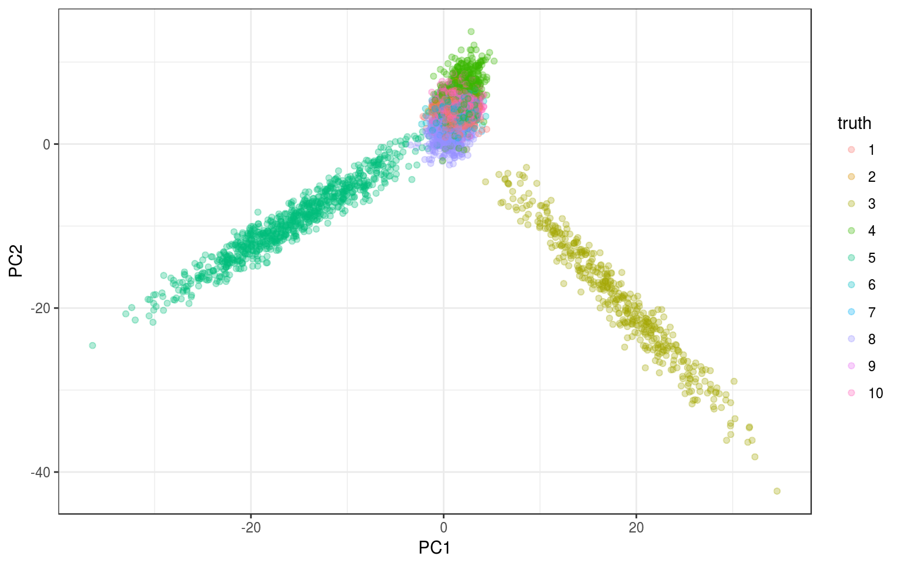
ggplot(info.norm, aes(x = PC3, y = PC4, colour = truth)) +
geom_point(alpha = 0.3) + theme_bw()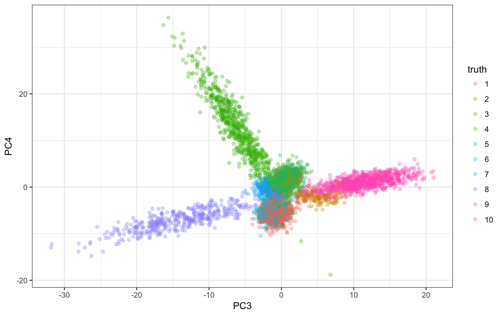
tsne.norm = Rtsne(pca.norm$x, pca = FALSE)
info.norm %<>% mutate(tsne1 = tsne.norm$Y[, 1], tsne2 = tsne.norm$Y[,
2])
ggplot(info.norm, aes(x = tsne1, y = tsne2, colour = truth)) +
geom_point(alpha = 0.3) + theme_bw()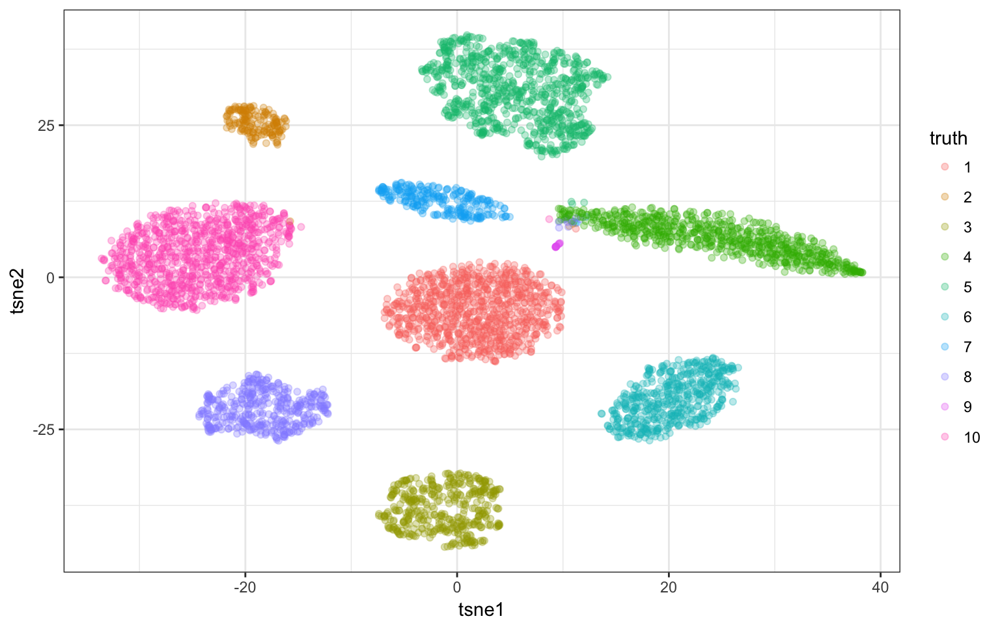
Real data
As a real-life example, I use the data that motivated this exploration. It contains a bit more than 26K points and the tSNE looks like that:
tsne.real = read.csv("https://docs.google.com/uc?id=1KArwfOd5smzuCsrpgW9Xpf9I06VOW4ga&export=download")
info.real = tsne.real
ggplot(tsne.real, aes(x = tsne1, y = tsne2)) + geom_point(alpha = 0.1) +
theme_bw()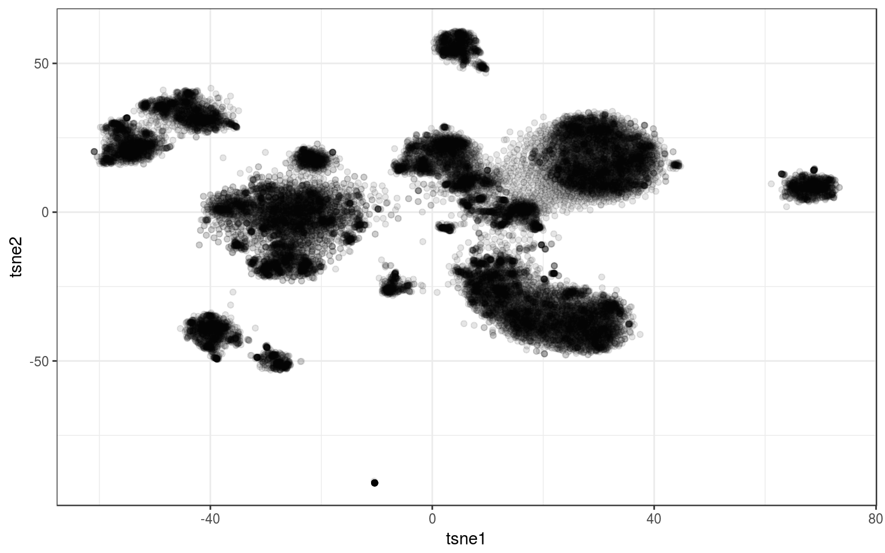
Hierarchical clustering
- + Once built, it’s fast to try different number clusters.
- + Different linkage criteria to match the behavior we want.
- - Doesn’t scale well. High memory usage and computation time when >30K.
hc.norm = hclust(dist(tsne.norm$Y))
info.norm$hclust = factor(cutree(hc.norm, 9))
hc.norm.cent = info.norm %>% group_by(hclust) %>% select(tsne1,
tsne2) %>% summarize_all(mean)
ggplot(info.norm, aes(x = tsne1, y = tsne2, colour = hclust)) +
geom_point(alpha = 0.3) + theme_bw() + geom_label_repel(aes(label = hclust),
data = hc.norm.cent) + guides(colour = FALSE) +
ggtitle("Linkage criterion: Complete")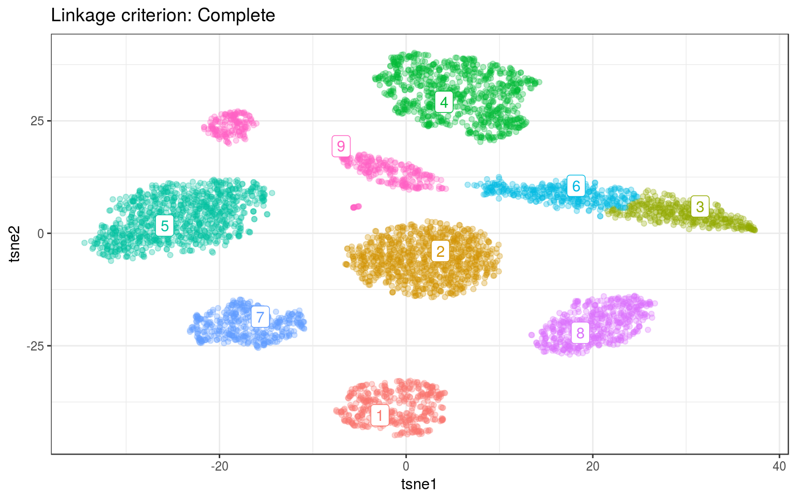
hc.norm = hclust(dist(tsne.norm$Y), method = "ward.D")
info.norm$hclust = factor(cutree(hc.norm, 9))
hc.norm.cent = info.norm %>% group_by(hclust) %>% select(tsne1,
tsne2) %>% summarize_all(mean)
ggplot(info.norm, aes(x = tsne1, y = tsne2, colour = hclust)) +
geom_point(alpha = 0.3) + theme_bw() + geom_label_repel(aes(label = hclust),
data = hc.norm.cent) + guides(colour = FALSE) +
ggtitle("Linkage criterion: Ward")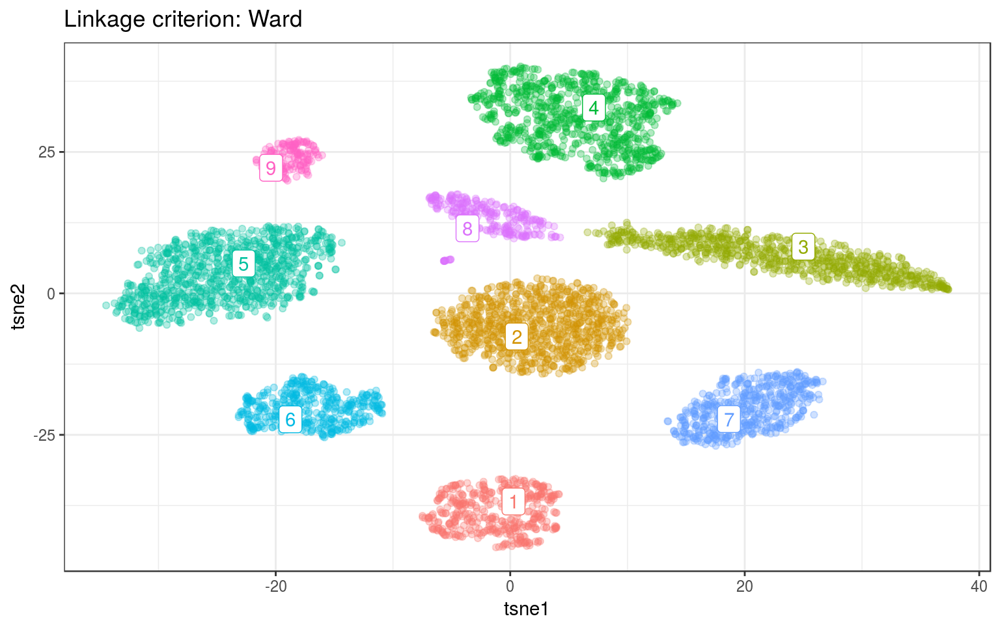
Now on real data:
hc.real = hclust(dist(tsne.real))
info.real$hclust = factor(cutree(hc.real, 18))
hc.real.cent = info.real %>% group_by(hclust) %>% select(tsne1,
tsne2) %>% summarize_all(mean)
ggplot(info.real, aes(x = tsne1, y = tsne2, colour = hclust)) +
geom_point(alpha = 0.3) + theme_bw() + geom_label_repel(aes(label = hclust),
data = hc.real.cent) + guides(colour = FALSE) +
ggtitle("Linkage criterion: Complete")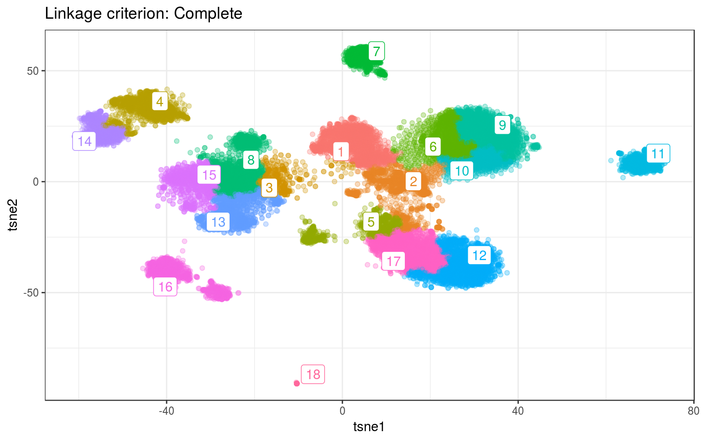
hc.real = hclust(dist(tsne.real), method = "ward.D")
info.real$hclust = factor(cutree(hc.real, 18))
hc.real.cent = info.real %>% group_by(hclust) %>% select(tsne1,
tsne2) %>% summarize_all(mean)
ggplot(info.real, aes(x = tsne1, y = tsne2, colour = hclust)) +
geom_point(alpha = 0.3) + theme_bw() + geom_label_repel(aes(label = hclust),
data = hc.real.cent) + guides(colour = FALSE) +
ggtitle("Linkage criterion: Ward")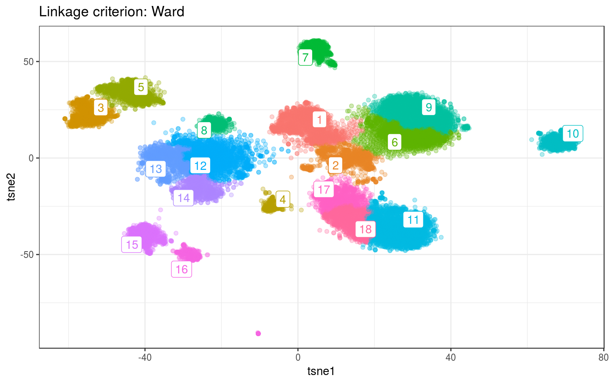
Time for this code chunk: 26.06 s
For both data, Ward gives the best clusters. For example it splits the top-left clusters better in the real data.
Kmeans
- + Very fast.
- - Simple.
km.norm = kmeans(tsne.norm$Y, 9, nstart = 100)
info.norm$kmeans = factor(km.norm$cluster)
km.cent = info.norm %>% group_by(kmeans) %>% select(tsne1,
tsne2) %>% summarize_all(mean)
ggplot(info.norm, aes(x = tsne1, y = tsne2, colour = kmeans)) +
geom_point(alpha = 0.3) + theme_bw() + geom_label_repel(aes(label = kmeans),
data = km.cent) + guides(colour = FALSE) + ggtitle("9 clusters")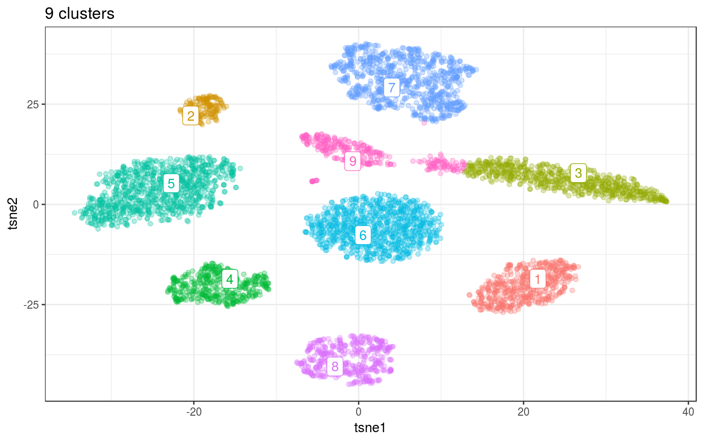
km.norm = kmeans(tsne.norm$Y, 10, nstart = 100)
info.norm$kmeans = factor(km.norm$cluster)
km.cent = info.norm %>% group_by(kmeans) %>% select(tsne1,
tsne2) %>% summarize_all(mean)
ggplot(info.norm, aes(x = tsne1, y = tsne2, colour = kmeans)) +
geom_point(alpha = 0.3) + theme_bw() + geom_label_repel(aes(label = kmeans),
data = km.cent) + guides(colour = FALSE) + ggtitle("10 clusters")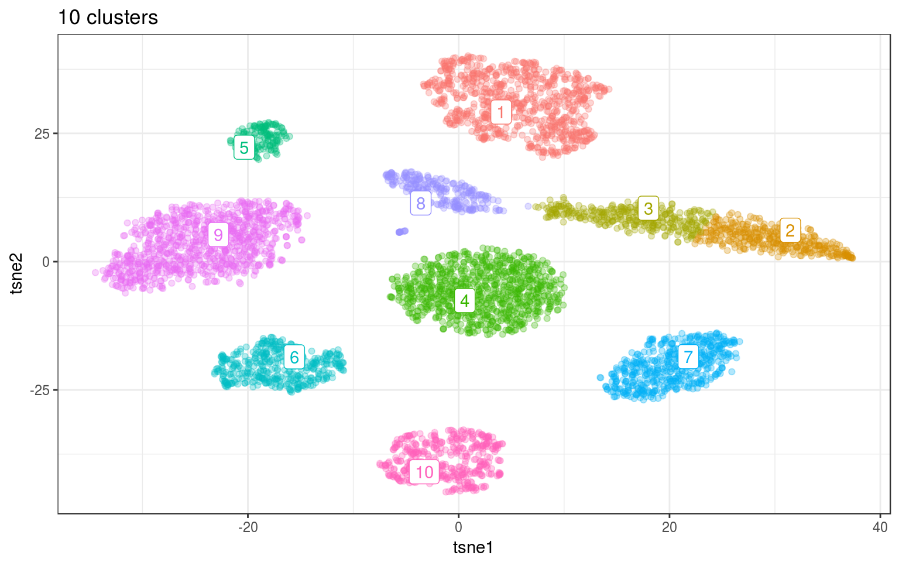
Because it’s not working well for cluster that are not “round”, we need to ask for more clusters. In practice we’ll need to merge back together the clusters that were fragmented.
set.seed(123456)
km.real = kmeans(tsne.real, 24, nstart = 200, iter.max = 100)
info.real$kmeans = factor(km.real$cluster)
km.cent = info.real %>% group_by(kmeans) %>% select(tsne1,
tsne2) %>% summarize_all(mean)
ggplot(info.real, aes(x = tsne1, y = tsne2, colour = kmeans)) +
geom_point(alpha = 0.3) + theme_bw() + geom_label_repel(aes(label = kmeans),
data = km.cent) + guides(colour = FALSE)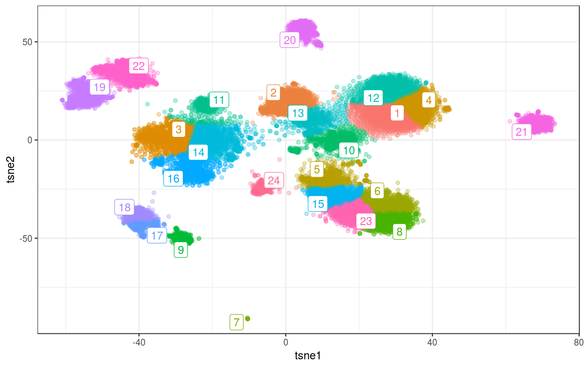
Not perfect in the middle-left big cluster: cluster 11 is grabbing points from the bottom blob. Maybe increasing the number of clusters could fix this?
set.seed(123456)
km.real = kmeans(tsne.real, 25, nstart = 200, iter.max = 100)
info.real$kmeans = factor(km.real$cluster)
km.cent = info.real %>% group_by(kmeans) %>% select(tsne1,
tsne2) %>% summarize_all(mean)
ggplot(info.real, aes(x = tsne1, y = tsne2, colour = kmeans)) +
geom_point(alpha = 0.3) + theme_bw() + geom_label_repel(aes(label = kmeans),
data = km.cent) + guides(colour = FALSE)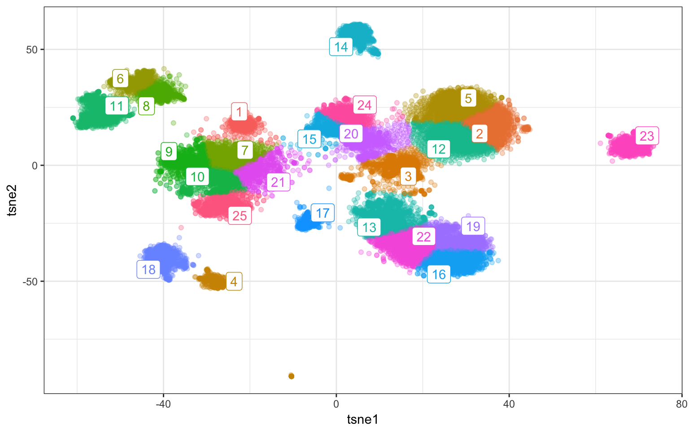
Time for this code chunk: 9.79 s
Better. Same as with the other methods: we need to manually tweak the parameters to obtain the clustering we want…
Note: using several starting points help getting more robust results (nstart=). Increasing the number of iterations helps too (iter.max=).
Mclust
- + Better clusters.
- - Slow.
- - Need to be recomputed for each choice of K (number of clusters).
mc.norm = Mclust(tsne.norm$Y, 9)
info.norm$mclust = factor(mc.norm$classification)
mc.cent = info.norm %>% group_by(mclust) %>% select(tsne1,
tsne2) %>% summarize_all(mean)
ggplot(info.norm, aes(x = tsne1, y = tsne2, colour = mclust)) +
geom_point(alpha = 0.3) + theme_bw() + geom_label_repel(aes(label = mclust),
data = mc.cent) + guides(colour = FALSE)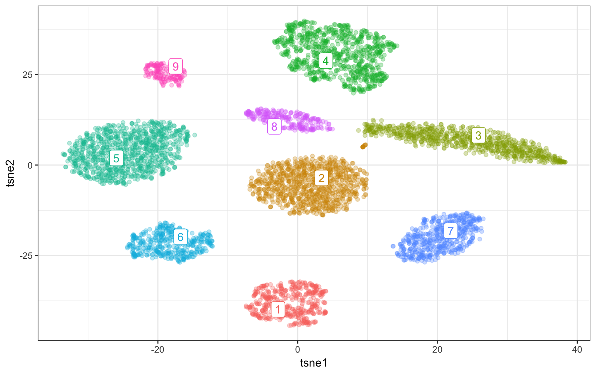
Even the elongated cluster is nicely identified and we don’t need to split it.
set.seed(123456)
mc.real = Mclust(tsne.real, 20, initialization = list(subset = sample.int(nrow(tsne.real),
1000)))
info.real$mclust = factor(mc.real$classification)
mc.cent = info.real %>% group_by(mclust) %>% select(tsne1,
tsne2) %>% summarize_all(mean)
ggplot(info.real, aes(x = tsne1, y = tsne2, colour = mclust)) +
geom_point(alpha = 0.3) + theme_bw() + geom_label_repel(aes(label = mclust),
data = mc.cent) + guides(colour = FALSE)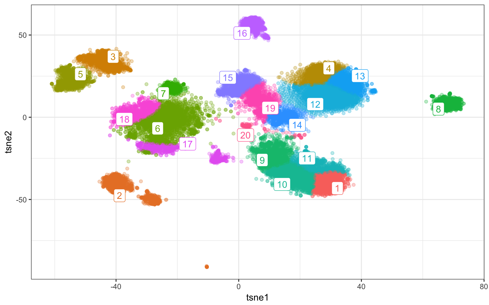
Sometimes the results are a bit surprising. For example, points are assigned to cluster far away or there is another cluster in between (e.g. clusters 6 and 17). As usual changing the number of clusters helps.
set.seed(123456)
mc.real = Mclust(tsne.real, 24, initialization = list(subset = sample.int(nrow(tsne.real),
1000)))
info.real$mclust = factor(mc.real$classification)
mc.cent = info.real %>% group_by(mclust) %>% select(tsne1,
tsne2) %>% summarize_all(mean)
ggplot(info.real, aes(x = tsne1, y = tsne2, colour = mclust)) +
geom_point(alpha = 0.3) + theme_bw() + geom_label_repel(aes(label = mclust),
data = mc.cent) + guides(colour = FALSE)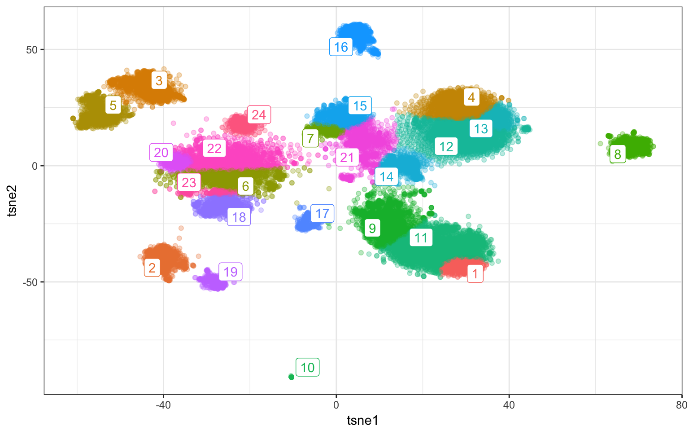
Time for this code chunk: 40.51 s
Note: I had to use the sub-sampling trick to speed up the process, it was taking too long. Using initialization=list(subset=sample.int(nrow(tsne.real), 1000)), only a 1K points are used for the EM (but all the points are assigned to a cluster at the end).
Density-based clustering
- + Can find clusters with different “shapes”.
- - More limited on real/noisy data.
- - Slow when many points.
ds.norm = dbscan(tsne.norm$Y, 2)
info.norm$density = factor(ds.norm$cluster)
ds.cent = info.norm %>% group_by(density) %>% select(tsne1,
tsne2) %>% summarize_all(mean)
ggplot(info.norm, aes(x = tsne1, y = tsne2, colour = density)) +
geom_point(alpha = 0.3) + theme_bw() + geom_label_repel(aes(label = density),
data = ds.cent) + guides(colour = FALSE)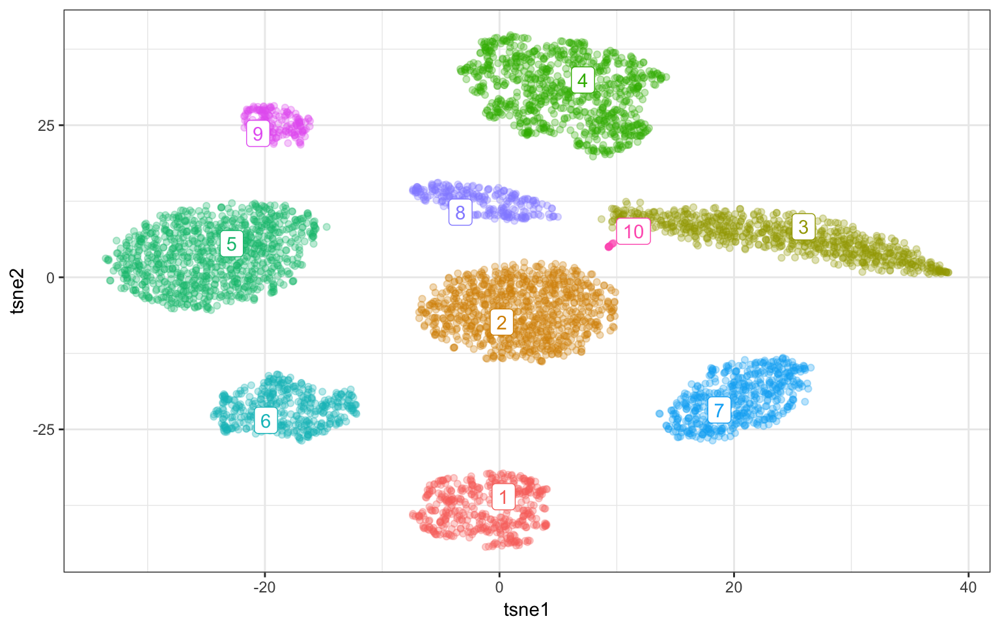
Woah, it found the small cluster !
ds.real = dbscan(tsne.real, 1)
info.real$density = factor(ds.real$cluster)
ds.cent = info.real %>% group_by(density) %>% select(tsne1,
tsne2) %>% summarize_all(mean)
ggplot(info.real, aes(x = tsne1, y = tsne2, colour = density)) +
geom_point(alpha = 0.3) + theme_bw() + geom_label_repel(aes(label = density),
data = ds.cent) + guides(colour = FALSE)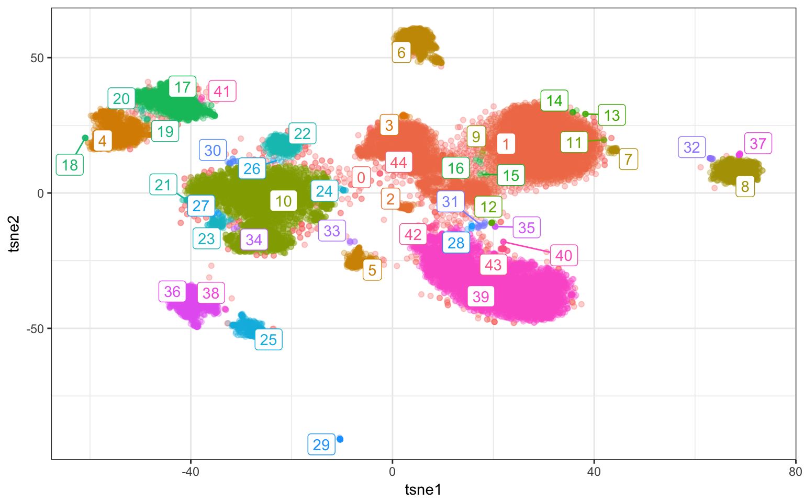
Time for this code chunk: 104.61 s
Ouch…
Conclusions
If possible, I’ll try to use hierarchical clustering. Especially with the Ward criterion, it worked well for both simulated and real data. Once the hierarchy is built, it’s fast to try different values for the number of clusters. Also, in the real data, I could get satisfactory results using a lower number of clusters than for the K-means (18 vs 25).
If there are too many points (e.g. >30K), hierarchical clustering might be too demanding and I would fall back to K-means. It’s fast and easy to get what we want if we accept over-fragmentation. In this cae, we might need to merged the fragments that we believe belong together but that’s not so hard to do.
The more advanced methods are good to keep in mind if the points ever form diverse or unusual shapes.
I learned two tricks to improve the performance of the methods: increasing the number of iterations and starting points for the K-means, and sub-sampling for the EM clustering.